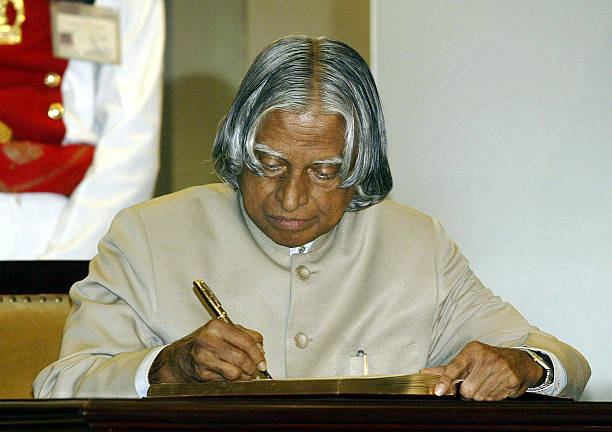

THE TRIBUTE WEBSITE
Dr A P J Abdul Kalam History “Dream, dream, dream. Dreams transform into thoughts and thoughts result in action.” – A P J Abdul Kalam A P J Abdul Kalam - APJ Abdul Kalam History Avul Pakir Jainulabdeen Abdul Kalam was born to Jainulabdeen, a boat owner and Imam, and Ashiamma, a housewife. Kalam had four brothers and a sister, all elder to him. Although Kalam’s ancestors had been wealthy traders, the family had descended into difficult times and Kalam used to sell newspapers as a child to add-on to his family’s modest income. Kalam studied at a school in Ramanathapuram and acquired a degree in Physics from Saint Joseph’s College, Tiruchirappalli. In 1955, he went to the Madras Institute of Technology to pursue aerospace engineering. His dream of becoming a fighter pilot was thwarted when he missed the qualifier by a narrow margin. He was ranked ninth but only 8 positions were available with the IAF. After that, he got a job as a scientist at the Aeronautical Development Establishment of the Defence Research and Development Organisation (DRDO). He also worked under eminent scientist Vikram Sarabhai. Kalam was transferred to the Indian Space Research Organisation (ISRO) in 1969. At ISRO, he was the Project Director of the satellite launch vehicle (SLV) that successfully deployed the satellite Rohini into orbit in 1980. It was India’s first SLV. Kalam also worked to develop the Polar Satellite Launch Vehicle (PSLV). He was also the director of two projects, Project Valiant and Project Devil for developing ballistic missiles from the SLV technology. His research and leadership led him to the directorship of an advanced missile development programme. When R Venkataraman was the Defence Minister, Kalam was appointed the chief executive of the Integrated Guided Missile Development Programme that was a project aimed at developing a fleet of missiles. He was known as the ‘Missile Man of India’ for his work in the development of ballistic missile technology. From 1992 to 1999, Kalam was the Chief Scientific Adviser to the Prime Minister and the Secretary of the DRDO. Kalam was the Chief Project Coordinator during the Pokhran II tests. During this time, Kalam became India’s best-known scientist. In 2002, Abdul Kalam was elected the 11th President of India. He had won by a huge margin. He was the first scientist to become India’s President and incidentally the first bachelor too. Kalam’s term as the president which lasted the full term till 2007 was beneficial for the office of the president itself. He came to be called the People’s President. His popularity soared among the people, especially school children. He visited many parts of the country and his speeches became popular for their motivational content. Despite pressure from the people to have him stand for a second term, he decided not to contest. After the presidency, Kalam became a visiting professor at the IIM Ahmedabad, IIM Shillong, IIM Indore, the Indian Institute of Science, Bangalore, Anna University, etc. Abdul Kalam died of a cardiac arrest while giving a lecture at the IIM Shillong on 27 July 2015. There was widespread grief expressed at his passing away with the government of India declaring a 7-day state mourning. The governments of various other countries as well as the United Nations expressed their grief. He was laid to rest with full state honours at his native Rameswaram. Abdul Kalam was a man of integrity who was known for his honesty. He left no personal wealth after his death barring a few personal possessions which included his books, laptop, etc. He was knowledgeable in the teachings of various religions and had become a symbol of inter-faith dialogue.